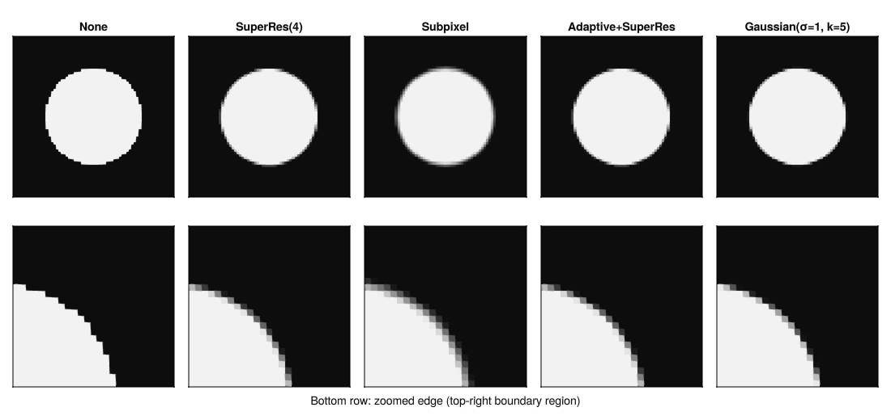

Anti-aliasing
When a shape boundary doesn't land on a voxel edge, something has to happen at the boundary voxels. The five strategies below cover most use cases.

Strategies
NoAntiAliasing() is a point test at the voxel center. Fast and binary. Use it when boundary accuracy doesn't matter, or as a baseline.
SuperResolutionAntiAliasing(n) divides each voxel into an n³ sub-grid and averages the results. Accurate at any curvature, but it does n³ times the work per voxel.
SuperResolutionAntiAliasing(4) # 4³ = 64 samples per voxel
SuperResolutionAntiAliasing((4, 4, 2)) # anisotropicSubpixelAntiAliasing() reads the SDF at the voxel center and estimates coverage from it. One evaluation per voxel, no inner loop, GPU-friendly. It assumes the boundary is locally flat, so accuracy drops when a voxel is large compared to the surface's radius of curvature. Needs sdf.
GaussianAntiAliasing(σ, kernel_size) convolves the boundary with a Gaussian, giving a soft edge instead of a crisp step. Kernel size must be odd.
GaussianAntiAliasing(1.0, 5) # isotropic σ=1, 5×5×5 kernel
GaussianAntiAliasing((1.0, 1.0, 2.0), (5, 5, 7)) # anisotropicAdaptiveAntiAliasing(inner) wraps any other strategy and skips its stencil for voxels clearly inside or outside the surface (when has_exact_sdf(shape) is true). Only boundary voxels pay the full cost.
AdaptiveAntiAliasing(SuperResolutionAntiAliasing(4)) # recommended default
AdaptiveAntiAliasing(SubpixelAntiAliasing())Choosing
| Strategy | Cost | Edge quality | Notes |
|---|---|---|---|
NoAntiAliasing | O(1) | Staircase | Good for prototyping |
SubpixelAntiAliasing | O(1) | Smooth | Best speed/quality tradeoff |
AdaptiveAntiAliasing(SuperRes(n)) | O(n³) at boundary | Accurate | Recommended for final runs |
SuperResolutionAntiAliasing(n) | O(n³) everywhere | Accurate | Only use when every voxel is near a boundary |
GaussianAntiAliasing | O(kernel³) | Soft | For intentionally blurred edges |
The AA strategy is set on the World, not the shape, so it applies to all shapes in the scene.
See the API reference for full signatures.